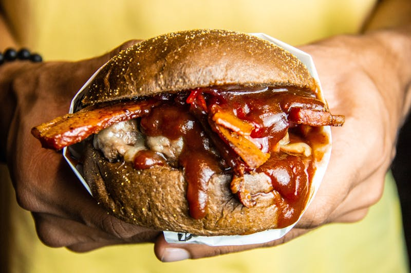
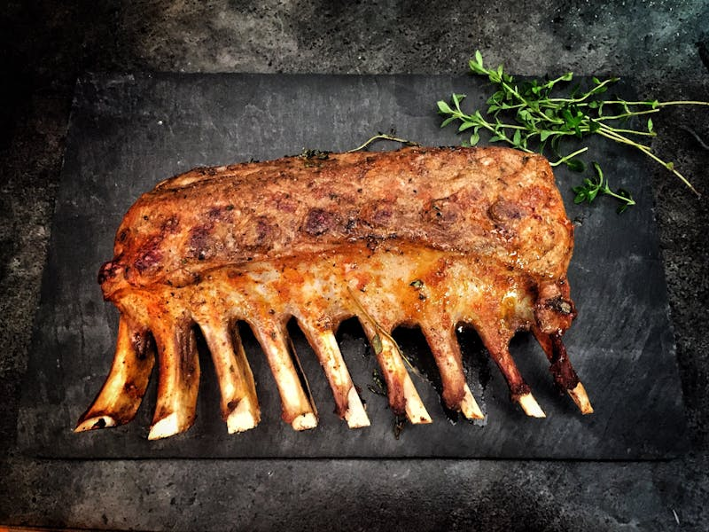

American BBQ

We all know it and we all love it but where did it originate from. It is believed that barbecue was first originated by a group Indigenous people who lived on the caribbean, much like how we cook barbecue, they cooked meat over an open fire. spanish explorers later adopted the technique and brought it back to Europe where it gained popularity very quickly.

Today American BBQ is loved by most for its flavor and wide variety. From celebrations to getting together to watch the game, American BBQ can be enjoyed all throughout the year.